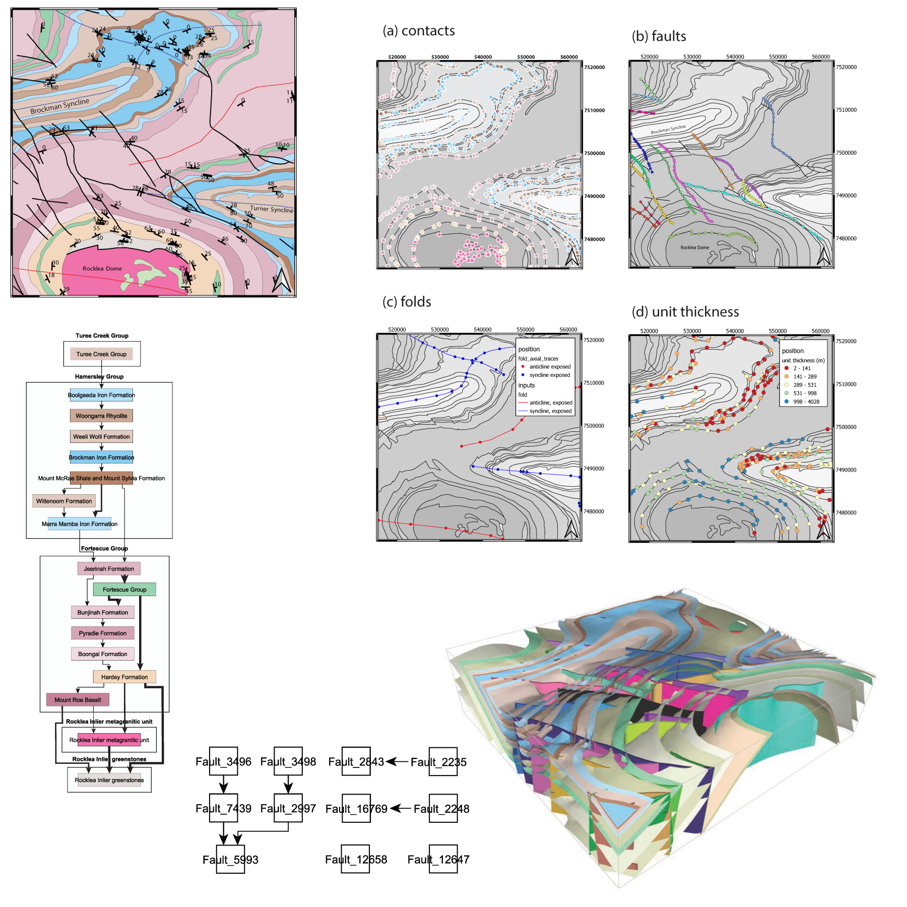

map2loop documentation
map2loop is a map deconstruction library to provide inputs to Loop ([Loop3d.org](https://loop3d.org/)). The development of map2loop is lead by Mark Jessell at The University of Western Australia. Yohan de Rose at Monash University is now making it better. Standalone map2model cpp code from Vitaliy provides fault/fault and fault/strat relationships.
{kind=link}
1. What it does:
Combines information extracted from vector geology maps in various forms to support 3D geological modelling.
To find out how this is achieved, read the article in Geoscientific Model Development
Outputs are simple csv files that should be readable by any 3D modelling system (I think), but specific examples are provided for
https://github.com/Loop3D/LoopStructural LoopStructural,
https://github.com/cgre-aachen/gempy gempy and
- Loop is led by Laurent Ailleres (Monash University) with a team of Work Package leaders from:
Monash University: Roy Thomson, Lachlan Grose and Robin Armit
University of Western Australia: Mark Jessell, Jeremie Giraud, Mark Lindsay and Guillaume Pirot
Geological Survey of Canada: Boyan Brodaric and Eric de Kemp
This is very much a proof of concept code that is unlikely to work first time with anything but the example dataset provided, but if you would like to try it with your own data please feel free to contact me at mark.jessell@uwa.edu.au to discuss your plans.
The fastest install path (thanks to Yohan de Rose) is via conda, with instructions and code:
Problems
Any bugs/feature requests/comments please create a new issue: https://github.com/Loop3D/map2loop/issues.
Acknowledgements
ARC Linkage Project LP1701000985
MinEx CRC